Dutch van der Linde
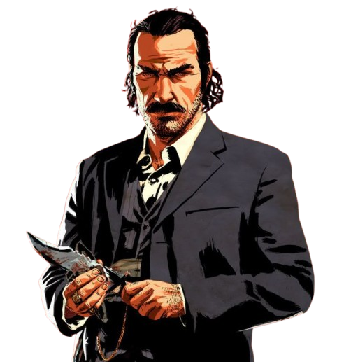
The charismatic and manipulative leader of the gang.

The charismatic and manipulative leader of the gang.

The main protagonist. Loyal, but morally conflicted.
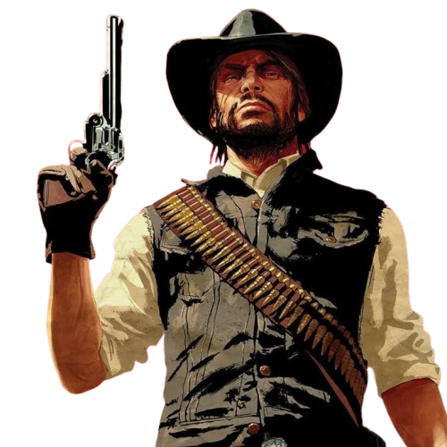
A former outlaw trying to become a family man.
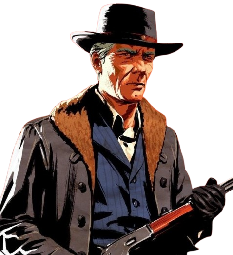
The wise and calm advisor of the gang.
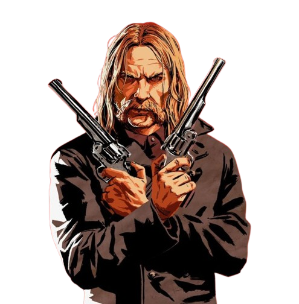
A violent and selfish outlaw who causes chaos.
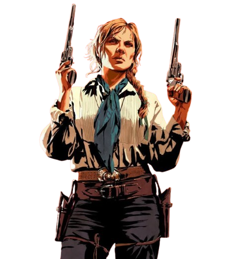
A strong bounty hunter who becomes one of the toughest fighters.
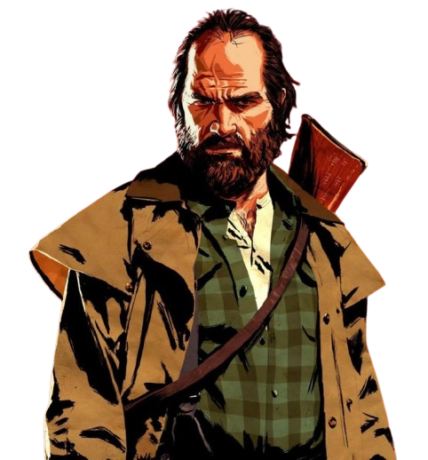
A former soldier turned outlaw. Not very bright but loyal and aggressive.
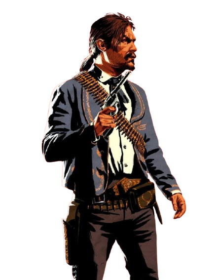
A skilled gunman from Mexico. Loyal to Dutch but becomes more ruthless over time.
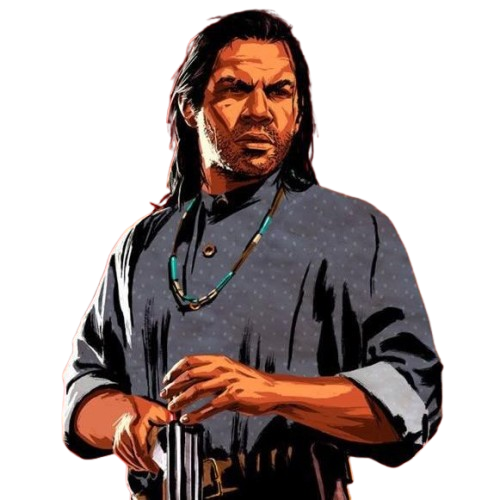
A quiet, honorable hunter and one of the most morally grounded members.
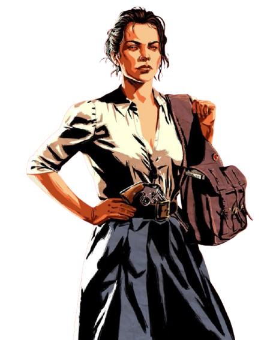
Wants a safer life for her family.
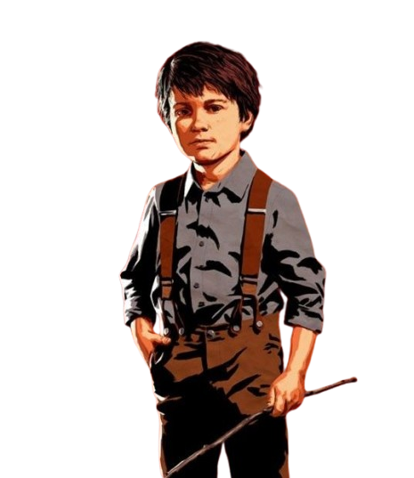
John’s son, growing up in the gang environment.
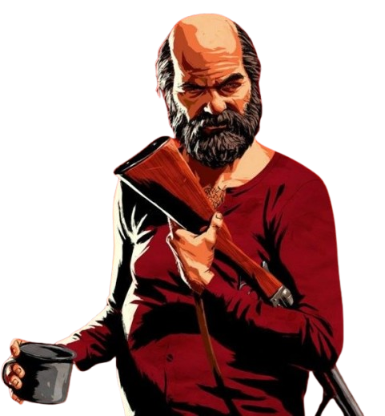
A lazy but sometimes useful camp member.
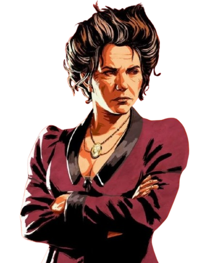
Keeps order in the camp.
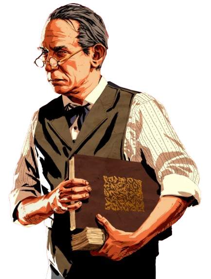
The gang’s loan shark who runs debt collection operations.
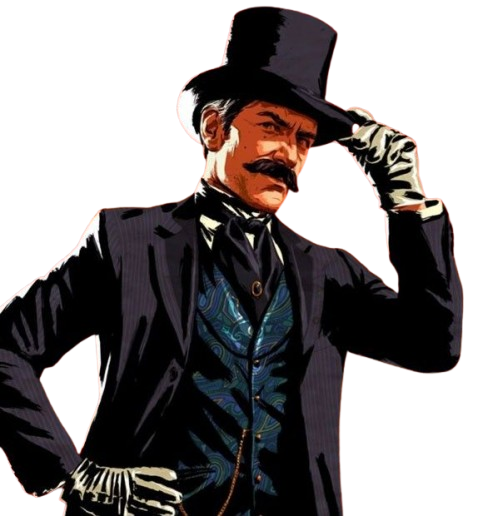
A charming conman who comes and goes frequently.
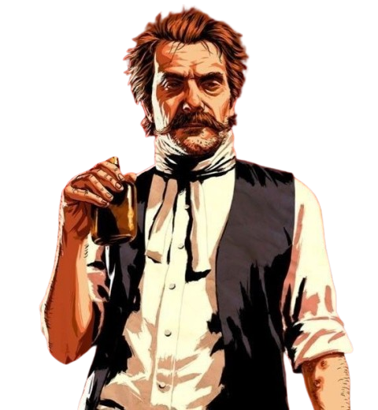
A troubled preacher struggling with addiction and guilt.
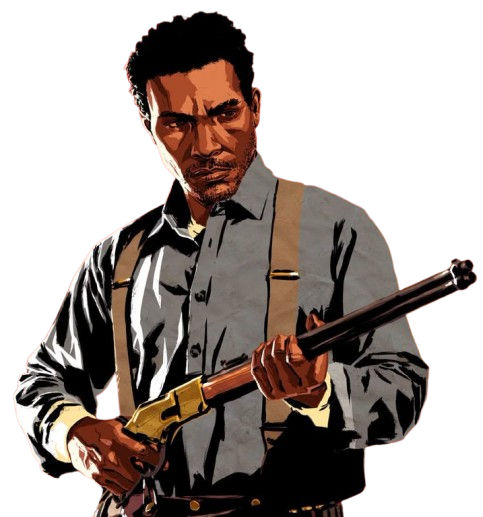
A young and intelligent outlaw.
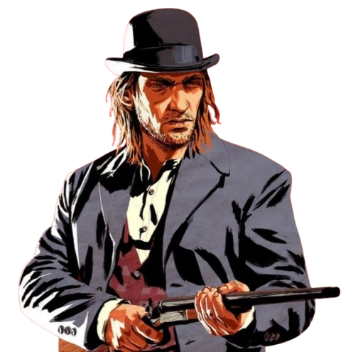
A loud and reckless gunslinger.
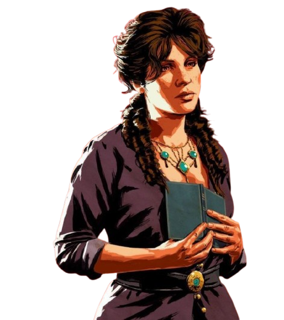
A kind-hearted pickpocket who dreams of writing.
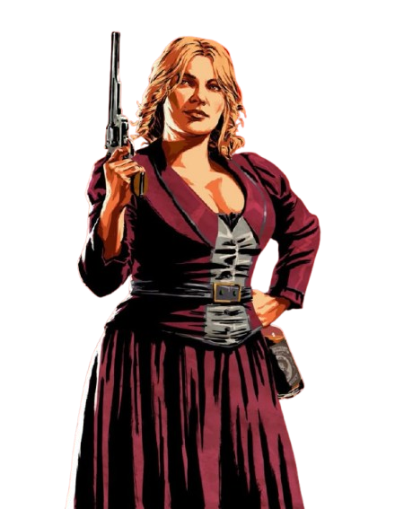
A skilled con artist who struggles with alcoholism.
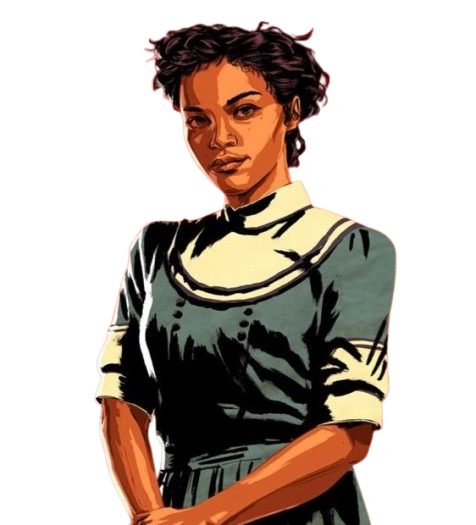
Strong, independent, and level-headed former gang member.
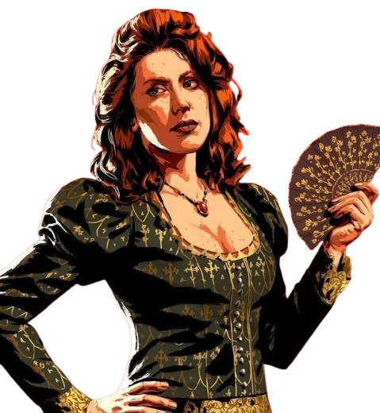
Dutch’s lover who feels increasingly neglected.
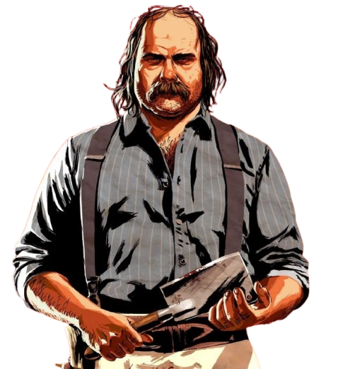
The camp cook and former sailor who provides supplies.
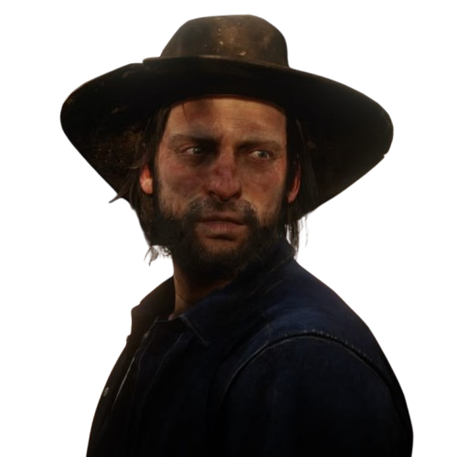
A nervous former O’Driscoll who joins the gang.
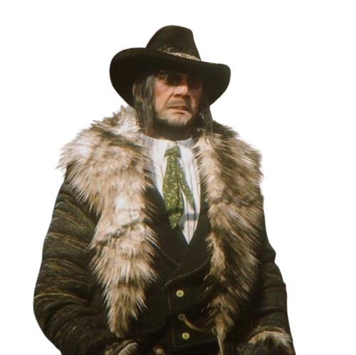
Leader of the rival O’Driscoll gang and enemy of Dutch.
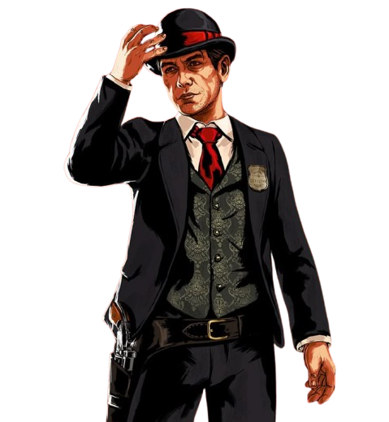
A Pinkerton agent who relentlessly hunts the gang.
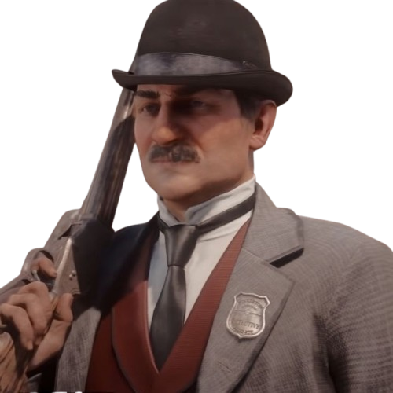
Another Pinkerton agent involved in the gang’s downfall.